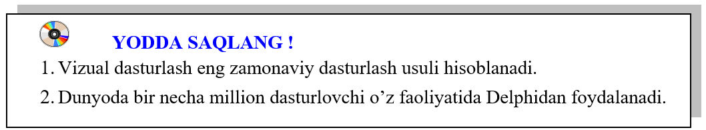

35-DARS. ILOVALAR YARATISHNING ZAMONAVIY USULLARI
1. Zamonaviy ilovalar. Ma’lumki, zamonaviy kompyuterlar operatsion tizimga ega.
Operatsion tizim ilovalari ular yordamida amaliy vazifalarni bajarishga xizmat qiladi.
Ilovalarga misol sifatida ofis ilovalari: MicroSoft Word (qisqacha  – MS Word),
– MS Word),  – MS Excel,
– MS Excel,  – MS Access,
– MS Access,  –
MS Power Pointlarni keltirish mumkin.
–
MS Power Pointlarni keltirish mumkin.
Bu ilovalarning o‘ziga xos jihati ularning interfaolligi bo‘lib, ular yordamida yuzlab va
minglab amallarni bajarish mumkin. Bunday murakkab ilovalarning o‘zi qanday yaratiladi?
Ilovalarni yaratishning dasturiy vositalari bugungi kunga kelib juda katta imkoniyatlarga ega.
Ular bilan tanishishni dasturlash tarixiga nazar tashlashdan boshlaymiz.
 Dastlab yaratilgan kompyuterlarda dastur bevosita
mikroprotsessorning buyruqlari (mashina kodi) ketma-ketligi ko‘rinishida
yozilgan. Bu esa dasturlash uchun juda katta kuch va vaqt talab qilgan, dasturdagi
xatolarni topish mushkul bo‘lgan. Bu ishni bir oz bo‘lsada osonlashtirish
uchun mikroprotsessor buyruqlari uchun qisqa nomlar kiritilgan va maxsus dastur bunday nomlarni
mashina kodi (mikroprotsessor buyruqlari)ga o‘girib bergan. Hosil bo‘lgan dastur kodi bevosita
kompyuterda bajarilgan. Bunday dasturlash Assembler tilida dasturlash deb atalgan.
Dastlab yaratilgan kompyuterlarda dastur bevosita
mikroprotsessorning buyruqlari (mashina kodi) ketma-ketligi ko‘rinishida
yozilgan. Bu esa dasturlash uchun juda katta kuch va vaqt talab qilgan, dasturdagi
xatolarni topish mushkul bo‘lgan. Bu ishni bir oz bo‘lsada osonlashtirish
uchun mikroprotsessor buyruqlari uchun qisqa nomlar kiritilgan va maxsus dastur bunday nomlarni
mashina kodi (mikroprotsessor buyruqlari)ga o‘girib bergan. Hosil bo‘lgan dastur kodi bevosita
kompyuterda bajarilgan. Bunday dasturlash Assembler tilida dasturlash deb atalgan.
Navbatdagi bosqichda kompyuterda yechiladigan masala bir necha kichikroq va osonroq masalalarga
ajratilgan. Zarurat bo‘lganda, ular ham o‘z navbatida yanada kichikroq masalalarga bo‘lib
chiqilgan. Bu esa bitta masala bo‘yicha bir nechta, ba’zan o‘nlab dasturchilar birgalikda
shug‘ullanishlariga imkon berdi. Yaratilayotgan dasturiy vositalarning, ya’ni ilovalarning
sifati yanada oshdi, dasturlar yanada murakkablashdi, dasturlar ko‘proq imkoniyatlarga ega
bo‘ldi. Bunday dasturlash tuzilmaviy dasturlash deb atalgan. Biz bilgan dasturlash tili Turbo
Pascal shunday tillar jumlasiga kiradi. Masalani kichikroq masalalarga ajratish hamda dasturlash
protseduralar va funksiyalar yordamida amalga oshirilgan.
Dasturlashning navbatdagi bosqichi obyektlarga yondashgan dasturlash deb ataladi. Bu birinchi
navbatda shaxsiy kompyuterlarning keng tarqalishi va ularda ishlashni yanada oson va qulay
qilish maqsadida yaratilgan grafik operatsion tizimlar (ularga hozirgi paytda keng tarqalgan
Windows ham kiradi) bilan bog‘liq.
Biz bilamizki, axborotni qayta ishlash usulini ma’lum bo‘lgan ma’lumot deb atash mumkin. Har
qanday axborotni obyekt deb qarashimiz mumkin. Turbo Pascalda ma’lumotlar o‘zgaruvchi va
o‘zgarmaslarga bo‘linadi. Ularni qayta ishlash usullari (qayta ishlash algoritmlari) alohida
protseduralar va funksiyalar ko‘rinishida bo‘ladi.
Obyektlarga mo‘ljallangan dasturlashda avvallari birlashtirish mumkin bo‘lmagan bu ikki unsurni
birlashtirish imkoni paydo bo‘ldi. Ular orasidagi farq yo‘qola boshladi. Natijada axborot bilan
ishlash yanada qulay va yanada osonroq bo‘lib qoldi. Bu esa bitta dastur ustida o‘nlab, yuzlab
va hatto minglab dasturchilar birgalikda ishlashlariga imkon berdi. Yaratilgan amaliy dasturiy
vositalarning imkoniyatlari keskin oshib ketdi.
Yaratilayotgan dasturiy vositaning o‘zini ham axborot deb qarash mumkin. Demak, dastur kodini yaratishda ham obyektlardan foydalanish mumkin. Masalan, har bir dasturning o‘z oynasi bo‘ladi. Dastur oynasining bo‘yi va eni kabi xossalari (oyna obyekti xossalari) bor, oynani yaratish, yopish, joyini va o‘lchovlarini o‘zgartirish kabi qayta ishlash usullari (oyna obyekti usullari) yordamida dastur oynasi bilan ishlashni osonlashtirish mumkin.
 Agar oyna degan obyekt yaratilgan bo‘lsa, dastur oynasi bilan ishlash bu
obyektning xossalarini kerakli tarzda o‘rnatish va obyekt usullaridan kerakli joyda foydalanish
ko‘rinishida juda oson kechadi. Natijada dasturlash yanada osonlashdi, yaratilayotgan
dasturlarning sifati yanada oshdi.
Agar oyna degan obyekt yaratilgan bo‘lsa, dastur oynasi bilan ishlash bu
obyektning xossalarini kerakli tarzda o‘rnatish va obyekt usullaridan kerakli joyda foydalanish
ko‘rinishida juda oson kechadi. Natijada dasturlash yanada osonlashdi, yaratilayotgan
dasturlarning sifati yanada oshdi.
Endi ilova yaratish uchun boshqalar tomonidan yaratilgan tayyor obyektlarni dasturga kiritish va
ularning xossalarini kerak bo‘lgandek qilib o‘rnatish yetarli bo‘lib qoldi. Bunday dasturlash
vizual dasturlash deb ataladi va dasturlash ko‘proq Lego yordamida o‘yinchoq yasashga o‘xshab
qoldi.
Hozirgi paytda umumlashgan dasturlash usuli ommaviylashib bormoqda. Uning ma’nosini quyidagicha
tushuntirish mumkin. Dasturda uchburchak, to‘rtburchak, ko‘pburchak, aylana kabi obyektlar va
ularning yuzasi degan xossalari bo‘lsin. Ularning har biridan foydalanish o‘rniga geometrik
shakl yuzasi degan xossadan foydalanishimiz mumkin. Dasturning o‘zi qanday geometrik shakl
to‘g‘risida gap ketayotganini aniqlab, kerakli obyektning kerakli xossasidan foydalanib javobni
topadi. Natijada dasturlash yanada osonlashdi va arzonlashdi. Endi yaratilayotgan dasturni bir
paytning o‘zida hoxlagan operatsion tizim uchun va uning interfeysini kerakli tilda yaratish
mumkin. Ularni o‘zgartirish ko‘p vaqt va kuch talab qilmaydi.
3. Zamonaviy dasturlash muhitlari. Hozirgi paytda dunyoda o‘n milliondan ortiq
dasturchilar bo‘lib, ulardan ikki millioni professional, qolganlari esa havaskor
dasturchilardir. Albatta, ularning ish qurollari, ya’ni ular foydalanadigan dasturlash muhitlari
ham bir-biridan farqlanadi.
Bugungi kunda keng tarqalgan dasturlash muhitlarida asosan uchta dasturlash tili: Si, BASIC,
Pascal dan keng foydalaniladi. Professional va tajribali havaskor dasturchilar asosan C (Si) va
uning keyingi variantlari C++ va C# dan foydalanishsa, faqat o‘zlarining masalalarini yechish
uchun dasturlashda foydalanadiganlarning ko‘pchiligi Pascal dan foydalanishadi. BASIC
(to‘g‘risi, Visual BASIC) Microsoft kompaniyasi mahsulotlari ofis ilovalari va boshqa
kompaniyalarning bir qator mahsulotlari, grafik muharrirlarda ishlarni avtomatlashtirish uchun
qo‘llaniladi.
Kuchli raqobat va foydalanuvchilarni jalb qilish maqsadida hozirgi paytda ommaviy dasturlash muhitlari bir paytda bir nechta dasturlash tillaridan foydalanish imkonini beradi. Shuningdek, so‘nggi paytda yaratilayotgan dasturlash tillarining ko‘pchiligi yuqoridagi tillardan biridan foydalanayotganlar uchun mo‘ljallab yaratilgan. Masalan, keng tarqalgan veb dasturlash tillari Java, Java Script, ASP, PHP, Python lar C++ va C# ga, keng tarqalgan kompyuter matematikasi paketlari MatLab, MathCAD, Maplelarning dasturlash tillari Pascalga, MacroMedia Flash nomli animatsion grafika yaratish ilovasining dasturlash tili Action Script esa Visual BASICga o‘xshab ketadi.
 4. Delphi dasturlash muhiti. Delphi (o‘qilishi
Delfi) qadimgi dunyoda mashhur bo‘lgan avliyo yashagan ibodatxona joylashgan grek
shaharchasining nomi bo‘lib, u avliyo kabi bu dasturlash muhiti ham ko‘pchilik orasida juda
mashhur bo‘lib ketgan. Uning qariyib chorak asr mobaynida 25 ta varianti yaratilgan bo‘lib, ular
quyidagi uchta guruhga ajratiladi:
4. Delphi dasturlash muhiti. Delphi (o‘qilishi
Delfi) qadimgi dunyoda mashhur bo‘lgan avliyo yashagan ibodatxona joylashgan grek
shaharchasining nomi bo‘lib, u avliyo kabi bu dasturlash muhiti ham ko‘pchilik orasida juda
mashhur bo‘lib ketgan. Uning qariyib chorak asr mobaynida 25 ta varianti yaratilgan bo‘lib, ular
quyidagi uchta guruhga ajratiladi:
Delphi 1 – Delphi 8 (1995-2003 yillar)
Delphi 2005 – Delphi 2010 (2005-2009 yillar)
Delphi XE 1 – Delphi XE 10 (2010-2017 yillar) Ularning barchasida asosiy (ba’zan yagona) dasturlash tili Object Pascal bo‘lsada, ko‘pchiligida C++, Assembler da, oxirgi variantlarida Java da, ba’zi versiyalarida hatto PHPda ham dastur yozish mumkin. Oxirgi versiyalari Windows ilovalari bilan birga Android va IOS ilovalarini ham yaratish imkonini beradi.


2. Zamonaviy dasturlash muhitlari haqida nimalar bilasiz?
3. Turbo Pascal da a) qiymat berish operatori; b) shartli operator qatnashgan dasturlar tuzing.
4. Turbo Pascal da a) tarmoqlanuvchi operator; b) sikl operatori qatnashgan dasturlar tuzing.

1. Delphi dasturlash muhitining nechta varianti ishlab chiqilgan va ular necha guruhga bo‘linadi?